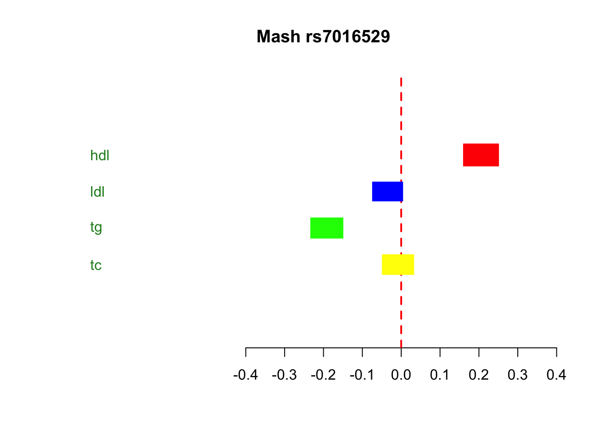
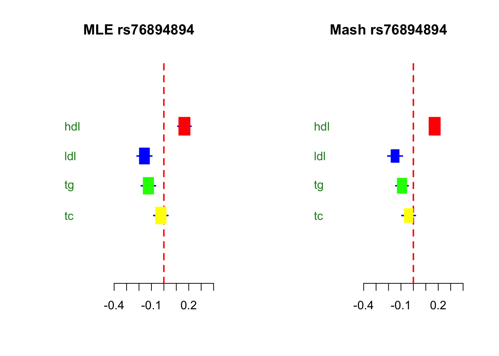

Last updated: 2019-10-07
Checks: 4 3
Knit directory: lipids_mvp/
This reproducible R Markdown analysis was created with workflowr (version 1.4.0). The Checks tab describes the reproducibility checks that were applied when the results were created. The Past versions tab lists the development history.
The R Markdown file has unstaged changes. To know which version of the R Markdown file created these results, you’ll want to first commit it to the Git repo. If you’re still working on the analysis, you can ignore this warning. When you’re finished, you can run wflow_publish to commit the R Markdown file and build the HTML.
Great job! The global environment was empty. Objects defined in the global environment can affect the analysis in your R Markdown file in unknown ways. For reproduciblity it’s best to always run the code in an empty environment.
The command set.seed(20190925) was run prior to running the code in the R Markdown file. Setting a seed ensures that any results that rely on randomness, e.g. subsampling or permutations, are reproducible.
Great job! Recording the operating system, R version, and package versions is critical for reproducibility.
To ensure reproducibility of the results, delete the cache directory looking_at_significance_cache and re-run the analysis. To have workflowr automatically delete the cache directory prior to building the file, set delete_cache = TRUE when running wflow_build() or wflow_publish().
Using absolute paths to the files within your workflowr project makes it difficult for you and others to run your code on a different machine. Change the absolute path(s) below to the suggested relative path(s) to make your code more reproducible.
| absolute | relative |
|---|---|
| ~/lipids_mvp/analysis/ | analysis |
| ~/lipids_mvp/data/merged_z.txt | data/merged_z.txt |
Great! You are using Git for version control. Tracking code development and connecting the code version to the results is critical for reproducibility. The version displayed above was the version of the Git repository at the time these results were generated.
Note that you need to be careful to ensure that all relevant files for the analysis have been committed to Git prior to generating the results (you can use wflow_publish or wflow_git_commit). workflowr only checks the R Markdown file, but you know if there are other scripts or data files that it depends on. Below is the status of the Git repository when the results were generated:
Ignored files:
Ignored: .DS_Store
Ignored: .Rhistory
Ignored: analysis/.DS_Store
Ignored: analysis/.RData
Ignored: analysis/.Rhistory
Ignored: analysis/figure/
Ignored: analysis/looking_at_significance_cache/
Ignored: analysis/workingwithdata_cache/
Ignored: data/.DS_Store
Ignored: data/Archive.zip.gz
Ignored: data/EDcov.Rds
Ignored: data/ash.rds
Ignored: data/gtexcolors.txt
Ignored: data/hdl_max.txt
Ignored: data/ldl_max.txt
Ignored: data/mashcomplete.rds
Ignored: data/mashcomplete.rds.zip
Ignored: data/max_ld_block.txt
Ignored: data/merged_betas.txt
Ignored: data/merged_p.txt
Ignored: data/merged_se.txt
Ignored: data/merged_z.txt
Ignored: data/tc_max.txt
Ignored: data/tg_max.txt
Ignored: data/znew.txt
Ignored: docs/.DS_Store
Unstaged changes:
Modified: analysis/looking_at_significance.Rmd
Note that any generated files, e.g. HTML, png, CSS, etc., are not included in this status report because it is ok for generated content to have uncommitted changes.
These are the previous versions of the R Markdown and HTML files. If you’ve configured a remote Git repository (see ?wflow_git_remote), click on the hyperlinks in the table below to view them.
| File | Version | Author | Date | Message |
|---|---|---|---|---|
| Rmd | d8023e7 | Sarah Urbut | 2019-10-07 | Update |
| Rmd | 3aa4ecc | Sarah Urbut | 2019-10-07 | Update |
| html | 3aa4ecc | Sarah Urbut | 2019-10-07 | Update |
| Rmd | 079589b | Sarah Urbut | 2019-10-07 | Update |
| html | 079589b | Sarah Urbut | 2019-10-07 | Update |
setwd('~/lipids_mvp/analysis/')
mash=readRDS("../data/mashcomplete.rds")
ash=readRDS("../data/ash.rds")
bf=read.table('../data/merged_betas.txt')
sf=read.table('../data/merged_se.txt')
z=read.table("../data/merged_z.txt")
pm=mash$result$PosteriorMean
pv=mash$result$PosteriorSD
lfsr=mash$result$lfsr
rownames(lfsr)=bf$SNP_hg18[1:2437099]
betas=bf[1:2437099,c("hdl","ldl","tg","tc")];rownames(betas)=bf$SNP_hg18[1:2437099]
se=sf[1:2437099,c("hdl","ldl","tg","tc")];rownames(se)=sf$SNP_hg18[1:2437099]
shrunk.beta=se*pm;colnames(shrunk.beta)=colnames(pm);rownames(shrunk.beta)=rownames(betas)
shrunk.se=pv*se;colnames(shrunk.se)=colnames(pm);rownames(shrunk.se)=rownames(betas)Let’s print the maximum by hdl and then triglyceride:
b=betas[order(abs(betas$hdl),decreasing=T),][1:100,]
tg=b[order(abs(b$tg),decreasing=T),][1:100,]
head(tg) hdl ldl tg tc
chr8:19850911 0.2186 -0.0310 -0.1911 -0.0141
chr8:19819463 0.2228 0.0112 -0.1825 0.0287
chr8:19849775 0.2230 0.0062 -0.1792 0.0260
chr8:19821159 0.2005 -0.0224 -0.1756 -0.0071
chr8:19848082 0.1994 -0.0206 -0.1753 -0.0049
chr8:19820855 0.1966 -0.0249 -0.1731 -0.0084j=which(rownames(betas)==rownames(tg)[1])
# title=paste("MLE",bf[j,"rsid"])
# par(mfrow=c(1,2))
# metaplot(as.numeric(betas[j,]),as.numeric(se[j,]),colors=meta.colors(box=c("red","blue","green","yellow"),lines="blue", zero="red", summary="orange",text="forestgreen"),xlim=c(-0.4,0.4),labels = colnames(shrunk.beta),xlab = "",ylab="")
# title(title)
title=paste("Mash",bf[j,"rsid"])
sd=as.numeric(shrunk.se[j,])##to transform to posterior sd of beta
x=as.numeric(shrunk.beta[j,])
metaplot(x,sd,xlab = "",ylab="",colors=meta.colors(box=c("red","blue","green","yellow"),lines="blue", zero="red", summary="orange",text="forestgreen"),xlim=c(-0.4,0.4),labels = colnames(shrunk.beta))
title(title)
| Version | Author | Date |
|---|---|---|
| 079589b | Sarah Urbut | 2019-10-07 |
print("LFSR of SNP")[1] "LFSR of SNP"lfsr[j,] hdl ldl tg tc
1.433870e-58 9.639228e-03 1.110223e-16 2.812616e-01 We can do the same for LDL and TG, sorting first by LDL and then by TG
b=betas[order(abs(betas$ldl),decreasing=T),][1:100,]
tg=b[order(abs(b$tg),decreasing=T),][1:100,]
head(tg) hdl ldl tg tc
chr2:21240579 0.1653 -0.1563 -0.1245 -0.0242
chr19:50081436 0.0528 -0.4853 0.1235 -0.3050
chr19:50103919 0.0978 -0.5898 0.1119 -0.3736
chr12:88544876 0.0560 -0.1631 -0.1105 -0.0957
chr7:14231090 0.0075 0.1367 0.1098 0.1617
chr19:50091184 0.0942 -0.1735 -0.1095 -0.1592j=which(rownames(betas)==rownames(tg)[1])
title=paste("MLE",bf[j,"rsid"])
par(mfrow=c(1,2))
metaplot(as.numeric(betas[j,]),as.numeric(se[j,]),colors=meta.colors(box=c("red","blue","green","yellow"),lines="blue", zero="red", summary="orange",text="forestgreen"),xlim=c(-0.4,0.4),labels = colnames(shrunk.beta),xlab = "",ylab="")
title(title)
title=paste("Mash",bf[j,"rsid"])
sd=as.numeric(shrunk.se[j,])##to transform to posterior sd of beta
x=as.numeric(shrunk.beta[j,])
metaplot(x,sd,xlab = "",ylab="",colors=meta.colors(box=c("red","blue","green","yellow"),lines="blue", zero="red", summary="orange",text="forestgreen"),xlim=c(-0.4,0.4),labels = colnames(shrunk.beta))
title(title)
| Version | Author | Date |
|---|---|---|
| 079589b | Sarah Urbut | 2019-10-07 |
print("LFSR of SNP")[1] "LFSR of SNP"lfsr[j,] hdl ldl tg tc
4.298489e-16 6.291464e-07 1.624161e-04 8.468237e-02 Let’s tabulate bu LD block
z=read.table("~/lipids_mvp/data/merged_z.txt")
bed=read.table("~/Downloads/ld_chunk.bed")
z=z[1:2437099,]### last 3 are rsIDs from mislabeled columns
library("reshape")
df=transform(z, foo = colsplit(z$SNP_hg18, split = "\\:", names = c('Chr', 'Pos')))
t=transform(rownames(lfsr), foo = colsplit(rownames(lfsr), split = "\\:", names = c('Chr', 'Pos')))
lfsr.mash=data.frame(t$foo.Chr,t$foo.Pos,lfsr,stringsAsFactors = T)
max_block=data.frame(matrix(ncol = 12,nrow=nrow(bed)))
colnames(lfsr.mash)=c("chr","pos","hdl","ldl","tg","tc")
for(i in 1:nrow(bed)){
chr=bed[i,1]
start=bed[i,2]
stop=bed[i,3]
in_chrom=lfsr.mash[lfsr.mash$chr==chr,]
goodguys=in_chrom[in_chrom$pos>start&in_chrom$pos<stop,]
if(nrow(goodguys)>0) {
max_block[i,1]=goodguys[which.min(abs(goodguys[,"hdl"])),"hdl"]
max_block[i,2]=as.character(goodguys[which.min(abs(goodguys[,"hdl"])),"chr"])
max_block[i,3]=as.character(goodguys[which.min(abs(goodguys[,"hdl"])),"pos"])
max_block[i,4]=goodguys[which.min(abs(goodguys[,"ldl"])),"ldl"]
max_block[i,5]=as.character(goodguys[which.min(abs(goodguys[,"ldl"])),"chr"])
max_block[i,6]=as.character(goodguys[which.min(abs(goodguys[,"ldl"])),"pos"])
max_block[i,7]=goodguys[which.min(abs(goodguys[,"tg"])),"tg"]
max_block[i,8]=as.character(goodguys[which.min(abs(goodguys[,"tg"])),"chr"])
max_block[i,9]=as.character(goodguys[which.min(abs(goodguys[,"tg"])),"pos"])
max_block[i,10]=goodguys[which.min(abs(goodguys[,"tc"])),"tc"]
max_block[i,11]=as.character(goodguys[which.min(abs(goodguys[,"tc"])),"chr"])
max_block[i,12]=as.character(goodguys[which.min(abs(goodguys[,"tc"])),"pos"])
} else {
z_good=rep(0,ncol(max_block))
}
}
colnames(max_block)=c("hdl","chr","pos","ldl","chros","pos","tg","chr","pos","tc","chr","pos")
max_block=na.omit(max_block)
hdl=max_block[max_block$hdl<0.05,c(1:3)]
ldl=max_block[max_block$ldl<0.05,c(4:6)]
tg=max_block[max_block$tg<0.05,c(7:9)]
tc=max_block[max_block$tc<0.05,c(10:12)]
write.table(hdl,"../data/hdl_max.txt")
write.table(ldl,"../data/ldl_max.txt")
write.table(tg,"../data/tg_max.txt")
write.table(tc,"../data/tc_max.txt")You can see the top snps per condition in hdl,ldl, tg and tc respectively:
setwd("~/lipids_mvp/analysis/")
hdl=read.table("../data/hdl_max.txt")
ldl=read.table("../data/ldl_max.txt")
tg=read.table("../data/tg_max.txt")
tc=read.table("../data/tc_max.txt")
head(hdl) hdl chr pos
1 0.004820571 chr1 1864186
3 0.018109771 chr1 3673967
6 0.029122581 chr1 9171464
8 0.023507666 chr1 11752767
9 0.027492121 chr1 11785644
10 0.047712163 chr1 13969007head(ldl) ldl chros pos
9 3.045868e-02 chr1 11792828
11 3.170071e-02 chr1 15681459
16 1.884265e-04 chr1 23638820
17 1.640371e-02 chr1 25401625
18 8.696752e-14 chr1 25633507
19 9.618922e-03 chr1 28171538head(tg) tg chr pos
1 0.02537673 chr1 1864186
3 0.01965191 chr1 3673967
6 0.03880887 chr1 9171464
8 0.02468262 chr1 11752767
9 0.02699725 chr1 11792828
10 0.04821747 chr1 13969007head(tc) tc chr pos
9 3.044234e-02 chr1 11792828
11 3.179709e-02 chr1 15681459
16 1.104899e-06 chr1 23638820
17 1.643571e-02 chr1 25401625
18 8.733627e-14 chr1 25633507
19 1.478879e-04 chr1 28217567
sessionInfo()R version 3.5.2 (2018-12-20)
Platform: x86_64-apple-darwin15.6.0 (64-bit)
Running under: macOS Mojave 10.14.6
Matrix products: default
BLAS: /Library/Frameworks/R.framework/Versions/3.5/Resources/lib/libRblas.0.dylib
LAPACK: /Library/Frameworks/R.framework/Versions/3.5/Resources/lib/libRlapack.dylib
locale:
[1] en_US.UTF-8/en_US.UTF-8/en_US.UTF-8/C/en_US.UTF-8/en_US.UTF-8
attached base packages:
[1] stats graphics grDevices utils datasets methods base
other attached packages:
[1] rmeta_3.0
loaded via a namespace (and not attached):
[1] Rcpp_1.0.1 knitr_1.23 magrittr_1.5
[4] workflowr_1.4.0 MASS_7.3-51.4 pscl_1.5.2
[7] doParallel_1.0.14 SQUAREM_2017.10-1 lattice_0.20-38
[10] foreach_1.4.4 ashr_2.2-37 stringr_1.4.0
[13] highr_0.8 tools_3.5.2 parallel_3.5.2
[16] grid_3.5.2 xfun_0.8 git2r_0.26.1
[19] htmltools_0.3.6 iterators_1.0.10 yaml_2.2.0
[22] rprojroot_1.3-2 digest_0.6.20 mixsqp_0.1-97
[25] Matrix_1.2-17 codetools_0.2-16 fs_1.3.1
[28] glue_1.3.1 evaluate_0.14 rmarkdown_1.14
[31] stringi_1.4.3 compiler_3.5.2 backports_1.1.4
[34] truncnorm_1.0-8